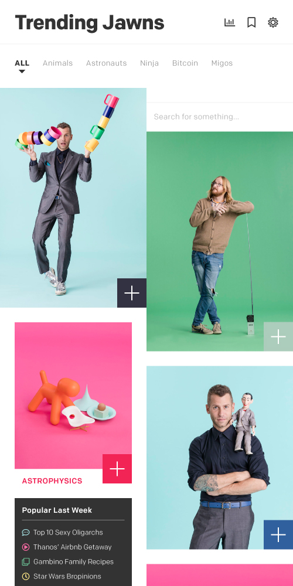
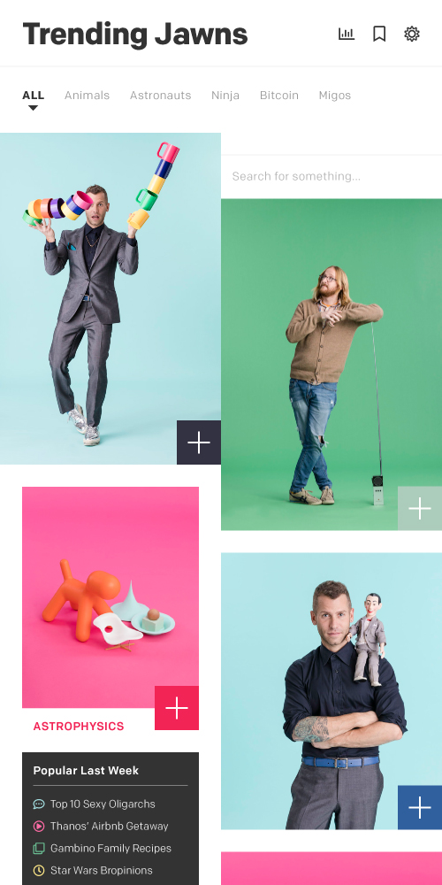

What I Do
I’ve got more than a few years of design & leadership experience — including a decade in-house creative directing one of the fastest growing non-profits in America where I recruited, coached, and led teams of designers, developers, copywriters, and content strategists. I’ve done hundreds of client projects building cohesive brand experiences (visual and verbal identities, websites, environments, apps, and campaigns) collaborating with everyone from executives and architects to filmmakers, fine artists, and a blacksmith or two. And I’ve helped build products at scale that served millions of users.
I’m an experienced generalist designer — comfortable as an individual contributor, collaborator, presenter, and team lead. I love to learn, attack a blank page, and spend more time on something than anyone might reasonably expect. I write a little, draw a lot, code enough to protoype dangerously, and use the software a 2019 designer should be able to use.


 
